常磐線被災地現地踏査
東日本ユニオンの本部及び各地方の業務担当者で行った「常磐線被災地現地踏査」の報告です。
はじめに
JR東日本労働組合では、2015年10月25～26日にいわき市をベースに水戸地本の仲間たちの案内で、いわき市内、広野町、楢葉町、富岡町をまわり被災エリア踏査を行いました。
そこで目にしたのは、津波によって集落ごとすべてを失った街、車窓から海を見ることも出来ないほど高い防潮堤、復興工事に走り回るダンプカー、目に見えない放射性物質などなど、現地に行かなければ決してわからないものでした。
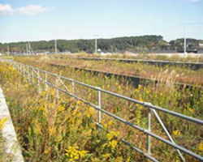
そこで、東京地本から現地踏査に参加した組合員の感想をもとに、6回にわけて現地踏査の報告をお届けします。
第1回
東日本大震災発生
2011年3月11日14:46頃、三陸沖にてM9.0の地震が発生。後に「東日本大震災」と命名される大地震でした。太平洋沿岸部に津波が発生、各地で壊滅的な被害が発生しました。いわき市では震度6弱を観測しました。
福島第一原発に津波が襲いかかる
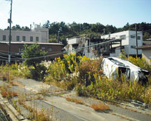
地震によって発生した津波によって、東京電力(株)福島第一原子力発電所の1～4号機は全て電源を失います。電力が得られない状態と地震発生時に運転中だった原子炉では燃料を冷やすことができない状態が長時間にわたって続きました。
2号機では原子炉圧力容器が破損、1、3号機では原子炉で発生した水素の爆発により建屋が大きく破損、定期検査中で運転していなかった4号機では3号機から流入した水素により建屋が破損し、大量の放射性物質が環境中に放出されました。
☆あなたは、「3月11日」なにをしていましたか？
☆報じられた原子力発電所の「姿」を見てどのように感じましたか？
☆映し出された「津波」に何を感じましたか？
第2回
集落ごと流された家々
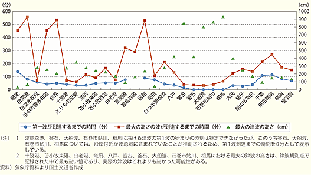
研修のベースとなったホテル近くでは、津波によって集落ごと押し流されてしまいました。家族の集う家々、子供たちの声に包まれていた学校…。
いわき市から北上する太平洋沿岸の道では、津波被害からの復興と同時に防潮堤建築工事が延々と続いています。デートコースと言われていた沿岸道路を車で走っても、車窓から海を見ることはできません。
※東日本大震災における津波の第1波、最大波の到達時刻と最大の津波の高さ/出典：国土交通省ホームページ(http://www.mlit.go.jp/hakusyo/mlit/h22/hakusho/h23/html/k1111000.html)
復興への道
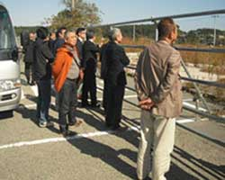
走る回る全国各地のダンプカーやトラック、忙しなくアームを動かす様々な重機。3.11で蒙った大きな被害は、かなりのスピードで復興しつつあります。
津波被害によって流失した集落に住む方々も、復興住宅への集団移転や生活の再建へと新たな道をすすみはじめています。
☆ここにも私たちの仲間たちが生活しています。
☆自然の力、想定外の力、私たち人間の力、どのように感じますか？
第3回
あの日から4年
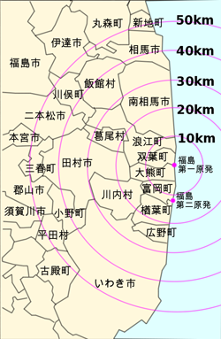
あの日から４年を経過し、帰村宣言が出され政府・自治体からの“指示”の内容も軽減されています。しかし、居住制限区域や帰還困難区域での生活は未だ成り立ちません。
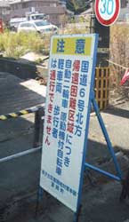
いわき市から国道6号線を北上すると、「えっと」と驚くほどの交通量があります。復興工事現場に向かうバスやトラック、各現場を行き来する商用車。
通常の宿泊施設は、工事関係者の共同自由宅になっています。プレハブの仮宿泊所も数多くありました。
いわき市から富岡町までの国道6号線沿には、コンビニ2件とガソリンスタンド4件が営業しています。見方を変えれば、この6件しか営業できないということです。
紅葉が始まった山々、白い波を見せる太平洋。のどかな風景がつづきます。
人の住んでいない町、活気が戻るのはいつか
突然田んぼに重機が入って作業をしています。黒や緑の大きな袋が整然と何段にも積み重ねられています。行き場を無くした「除染」によって発生した汚染土の仮置きです。
除染はすべての居住地・すべての農耕地・すべての山野を対象に行われることになっているそうです。気の遠くなるような作業が予想されますが、進められています。
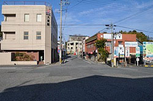
街は、“きれい”です。以前と変わりがないと言われていました。違いは、人が住んでいるかいないかということです。
閉められたカーテンや障子、割られた窓ガラスなど、この4年間で何が起き、何が変わったのか...。容易に想像できます。繁盛店だった道の駅は臨時の警察署に姿を変えていました。
第4回
あの日から４年を経過し、帰村宣言が出され政府・自治体からの“指示”の内容も軽減されています。しかし、居住制限区域や帰還困難区域での生活は未だ成り立ちません。
“想定外”と片づけることなど出来ない現実がここにはあります。自然災害をはじめ様々な異常事態に遭遇する可能性が私たちにはあります。
避難指示とは・避難指示区域とは
「避難指示」とは、避難命令ではありませんが避難勧告よりも強い言葉で、“避難しなさい”ということです。日本では、法的な「避難命令」というものはなく、避難指示が出て避難しなくても罰則はありませんが、「警戒区域」に無断で入れば罰則もあります。ということが、災害対策基本法に書かれています。原子力事故の場合は原子力災害対策特別措置法に書かれています。
避難指示が出ている区域が「避難指示区域」です。
警戒区域とは・計画的避難区域とは（以前の区域設定）
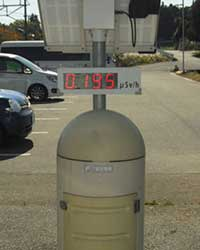
「警戒区域」とは、災害による危険を防ぐために許可を得た者以外の出入を禁止したり、制限したりしている区域です。天災の場合にも、人災の場合にも、警戒区域は設定されます。以前の区域見直し前は、避難指示区域の中に「警戒区域」と「計画的避難区域」がありました。
2013年5月28日までは、福島第一原子力発電所から半径20km以内は警戒区域でした。検問があって、そこから先は行けませんでした。
「計画的避難区域」とは、当時の20km圏内よりは遠いのですが、区域の指定から約1か月の間に避難のため立ち退くことを求めた区域です。そこに住むと、放射線の年間積算線量（1年間に受ける放射線量の合計）が20ミリシーベルトに達する恐れがあるとされた地域です。
区域設定見直し＝2012年（平成24年）4月から現在
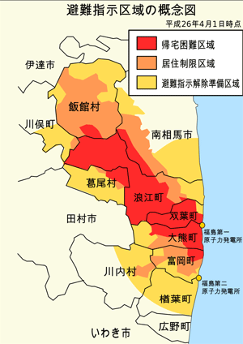
福島第一原発の原子炉が冷温停止状態になったあと、区域設定の見直しが行われ、2012年4月から区域が再編されました。以前は、避難指示地域を警戒区域と計画的避難区域に分けていましたが、現在は避難指示区域を「帰宅困難区域」・「住居制限区域」・「避難指示解除準備区域」に分けています。
特別な許可がなければ、立ち入りできない地域が、帰宅困難区域です。立ち入り禁止です。国道には検問があります。現在の放射線の年間積算線量が50ミリシーベルトを超えており、5年後も20ミリシーベルトを下回らない可能性のある地域です。
※国際放射線防護委員会（ICRP）は、人が受ける年間積算線量の許容量として、平常時は1ミリシーベルト以下、原子力事故などの緊急時は20～100ミリシーベルト、事故後の復旧期は1～20ミリシーベルトとする指標を示している。
住居制限区域とは
その地域に住むことはできません。許可がなければ泊まることもできません。お店を開いて商売もできません。例外的に復興作業に必要なガソリンスタンドなどは開くことができます。
ただし「住居制限区域」は、特別な許可がなくとも自由に入ることができます。自動車で通ることも、車から降りて歩くこともできます。たとえば、飯舘村はみなさん避難していますが、村内を通る国道はたくさんの自動車が行き来しています。富岡町の富岡駅には、大勢の見学者がやってきます。
でも、「居住制限区域」の店は全部閉まっています。住んでいる人もいません。放射線の年間積算線量が20～50ミリシーベルトの地域です。
避難指示解除準備区域とは
この地域には、特別な許可がなくても入ることができます。特別な許可がなければ自宅などに泊まることはできませんが、会社や店を開くことはできます。
避難者・自主避難者とは
自宅が壊れていなくても、自宅に住むことができない避難指示地域（帰宅困難区域・住居制限区域・避難指示解除準備区域）の人は、「避難者」です。福島県内の避難指示地域以外の場所は、普通に住んでいても良いのですが、様々な不安や事情のために避難する人もいます。この人が「自主避難者」です。
区域設定
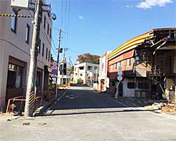
福島第一原発の近隣地域を行くと、ここは通っても良い、ここから先はだめとか、建物の玄関が封鎖されているところとそうでないところがあります。
たとえば富岡町は、3地域が入り交じっています。小さな道路一本をへだてて、同じ避難指示地域でも、こちら側が居住制限区域（出入り自由）、あちら側が帰宅困難地域（出入り禁止）になっていたりします。自宅が、避難指示区域に入るかはいらないか、さらに帰宅困難区域になるかならないかで、大きな違いが出ます。立ち入りや宿泊の自由だけではなく、東京電力の対応も変わります。保証金も違います。複雑な問題も起こるでしょう。
第5回
JR常磐線の開通状況
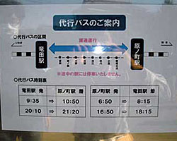
常磐線の不通区間は、津波被害によって不通になっている区間「浜吉田～相馬」と原発事故被害によって不通になっている区間（福島第一原発から20㎞圏）「原ノ町～竜田」です。不通区間は、バスによる代行運転が行われています。
常磐線と並走する国道6号線と常磐自動車道はすでに通行可能（走行中窓を開けない、何かあれば自己責任、二輪車はダメなどの注釈つき）となっています。
運転再開したいわき～竜田間の利用者は地方自治体職員と東電社員と工事関係者だそうです。
各駅には、線量計が設置してあります。しかし、不測の事態への対応への具体的指導は会社からはありません。
これからの復旧計画
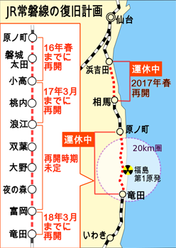
2015年3月10日の復興推進会議で、国土交通省から発表がありました。
現在不通となっているJR常磐線の富岡～原ノ町間と相馬～浜吉田間のうち、小高～原ノ町間が2016年春、浪江～小高間が「遅くとも2年後の開通を目指す」としています。
それにより2017年春頃までに浪江～原ノ町間が復旧します。また、相馬～浜吉田間も2017年春頃に運転再開見込みであることが決まっています。
したがって、2017年春頃に、不通区間は竜田～浪江間のみになります。その竜田～浪江間のうち、竜田～富岡間についても、3年以内を目途にできるだけ速やかな開通を目指しており、2018年頃の復旧の見通しです。
最後に残るのは富岡～浪江間ですが、この区間は帰還困難区域を含んでおり、「除染や異常時の利用者の安全確保策を完了した後、開通」としただけで、運転再開時期は示されませんでした。
第6回
---見聞きして感じたこと・考えさせられたこと---
地震・津波・放射能によるそれぞれの被害
傾いたままの家屋・崩れた看板・ヒビ割れた道路・津波に流されさび付いた車等
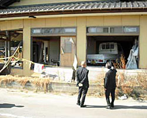
3.11から時が止まってしまった被災地を歩き、「何で」という思いが先行し、この現実を自分の中に受け入れることがなかなか出来ませんでした。
避難を余儀なくされた方々
取るものも取らず、言われるまま、訳も分からず非難しなければならなかった方々。正確な情報提供、判断する知識・経験、政府・地方自治体の命令や指示「想定外」の状況で命をかけたたたかいだったのでしょう。
ガラス戸が割られている家
かなりの数の家で玄関や居間のガラス戸が割られていたそうです。人の窮地につけこんだ不心得者が多くいるそうです。通帳や現金、貴金属、電化製品等々を奪う犯罪者を許すことはできません。
カーテンが閉められ、障子が閉められている家々
車窓から見える家々は、カーテンや障子が閉められ庭や畑もきれいに片づけられていました。日々家族が集い普通に生活を営み、笑顔にあふれていただろうと想像できます。しかし、3.11以降そこには生活の営みも笑顔もありません。
除染作業で生み出される放射性物質は、袋に入れられ幾重にも野積みされている。
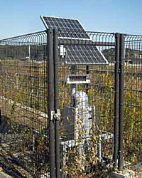
「緑色と黒色の大きな袋」が幾重にも重ねられ野積みされているさまが目を奪います。中身は除染作業で生み出されて放射性物質を含んだ土壌などです。
表土を削り取っていく作業は重機などで進められていますが、その先の行程が決まっておらず進んでいないのが現状です。
田も畑も山も除染するのが政府方針
居住地や農耕地ばかりでなく、延々と続く山々も除染するのが政府方針だということです。“放置”という方針ではなく“行う”という方針は理解できますが、現実問題として容易ではないと言わざるを得ません。膨大な時間と資金を投入しなければ実現することはできないことが、容易に想像できます。
除染作業の順番を先送りしている。→庭の片隅にまとめて置かれるだけだから
仲間たちやＯＢの方々の自宅も除染対象になっているそうです。「順番が来た」と連絡が来るそうですが「今回は見送る」と返事されるそうです。
居住地の表土を削り取り、庭の隅にまとめて置くのが現在の居住地除染なのだそうです。仲間たちは「線量が上がる」と順番を先送りしているのです。目に見えない放射能とのたたかいは、根本的解決策を見出すことが出来ず、手詰まり感を感じます。
「復興」実感できない
時々に発せられる政府や自治体のスケジュールに、右往左往している
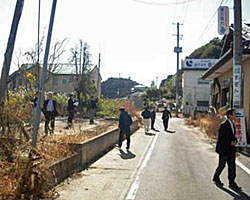
復興計画が政府・地方自治体によって示されています。それに従い様々な工事・作業が進められています。現実問題に直面し、スケジュールばかりか計画そのものが「変更」となることが多々あるそうです。“柔軟な対応”と理解しようとしているけれど、その場しのぎ、場当たり的に感じてしまうと話されていました。
地方だけ、まして個人では復興は厳しい。
「あなたは『被災地産』の農林水産物とわかっていて口にする？」と問われ、答えに窮しました。
帰村宣言が出され居住が可能になったとしても、生活を営む手段がないのです。コメや野菜、山菜など作ることも採ってくることも出来るけれど、出荷することは出来ないのです。
帰村宣言は出たが生活感は感じられない。→学校も病院もスーパーも…なにもない。(いわき以北ではコンビニ２件GS４件のみ営業中)
帰村宣言が出され、ライフラインなども復旧しました。帰村し生活を始めた方々は、いらっしゃいます。しかし、残念ながらその生活を支える学校も病院もスーパーも開いていません。夜になるとポツンポツンと明かりが灯るそうです。
「補償金」などお金にまつわる話...。
「あそこの家はベンツ、ここはレクサス」などと、冗談のような話があるそうです。報奨金や見舞金などお金にまつわる、聞きたくないような話があるそうです。
ふるさとの思い出...。
四季折々に自然の恵みを得て生活をしてきた村々。海、山、川、田畑など豊かに自然の中で過ごしたふるさとを取り戻すことが、何よりの復興なのかもしれません。
こうした状況の中で働いている仲間たちがいる
高速も国道も「自己責任」を条件に運行再開というが仕事・業務ならどうするのか？
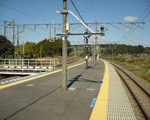
「窓を開けない、車外に出ない、何かあったら自己責任」が高速道路と国道の通行再開の条件なのです。そのような場所で仕事をする、業務を担うということは“特別”なことだと考えます。
企業活動を再開するにあたっては、業務を担う社員に対して十二分な配慮と安全対策を示し、その内容に沿った企業運営が必要だと痛感しました。
「いわい～竜田駅」間、現時点での列車利用者は東電関係者、自治体職員だけ。
列車が走ることは復興に役立つのか？仲間たちは日々疑問に感じているそうです。現在、乗車しているお客様は、東電関係者か自治体職員だけだそうです。
放射線量“大本営発表”状態？信じられるのか、の想いが強い。
様々な研究機関や保健機関が放射能に関する数値を示しています。この間の“不信感”などから政府・地方自治体が発表している数値や対応・対策に対して「大本営発表」的に感じられ、信じられないでいるのが現実だと言われていました。
仲間たちの労働環境は“想定外”のなかで十分に整えられているだろうか？
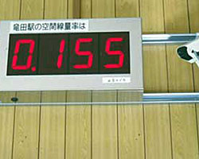
業務中に線量計の数値が悪化したらどのように対処するのか？まさか会社は「想定外」と対処を放棄することはないでしょうが、現実的には問題や疑問が解決されないままになっています。
例えば、廃炉作業などで万一の場合、会社は、社員がお客様の避難誘導にあたるとしているが、具体的な指示や異常時訓練すら行われていない。
会社は、社員の健康状態などをどのように管理監督し業務を指示しているのか、疑問が残ります。
オリンピックへのアピールなのではないか？
復興推進会議などで示されたスケジュールは、「東京オリンピック」に付して作られているのではないか、と感じられる。全体の復興や国際的なアピールを考えるならばチャンスなのかもしれないが、スケジュールに現実や企業としての取り組む姿勢が追いついていない。
最後に
災害に対する備えは、「命を守る」を第一、大前提に考えるべき。
地震や風水害など私たちの生活や業務は自然災害と隣り合わせです。“想定外”という事後の言い訳では「命を守る」ことは出来ません。
命を守る、安全第一を大前提に企業として可能な限りの努力と配慮を行うべだと考えます。「法」に定められているからやるのではなく、「命を守る」ために思考し行動することを強く求めます。
国、地方自治体、企業は小手先の問題解決や目先の利益に囚われることなく、命と生活を守るという視点に立つこと。
国、地方自治体には、小手先や目先のことに陥ることなく、命と生活を守るために柔軟に現実に対応することが求められている。
被災地のみが発意や奮闘に、応援する体制をキチンと創りあげる。
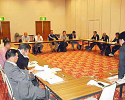
風評や一面的な情報に踊らせることなく、現実としっかり向き合い、私たちに出来ることをキチンと行い、人として仲間として支えあって行きたい。そのためには正確な情報の提供と、それを検討・判断しうることが不可欠である。
「人の振り見て我が振り直せ」多くの教訓に真摯に学び、今後に活かすべく努力すること。
ＪＲとして復興の一翼を担うということは、形ばかりでなく私たちの姿勢そのものが会社にも社員にも求められていることを胸に刻もう。